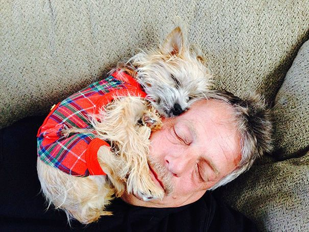

Я — Боня, очаровательный йоркширский терьер, и я хочу рассказать тебе обо всём, что мне дорого: о моей породе, моих привычках, моих мечтах и даже о том, как я сплю!
Эта страничка — мой маленький уголок в огромном интернете. Надеюсь, ты проведёшь здесь время с улыбкой 😊
Я так рада, что ты нажал(а) «Давай дружить»! Теперь мы — настоящие друзья! С этого момента я всегда буду рядом: когда тебе весело, грустно, скучно или просто хочется обнять кого-то мягкого и пушистого.
Знаешь, для меня дружба — это не просто слово. Это значит: слушать тебя, греть лапками в холодный вечер, лаять на подозрительных прохожих и приносить тапочки (ну... хотя бы иногда 😅).
Ты — мой самый особенный человек. И я обещаю быть честной: если ты дашь мне сыр — я полюблю тебя ещё больше. А если не дашь — всё равно полюблю, но буду смотреть грустными глазами до тех пор, пока не сдашься!
Спасибо, что доверил(а) мне своё сердце. Я бережно его спрячу между своими ушками и никогда не выпущу!
|
 типа это мы :) |